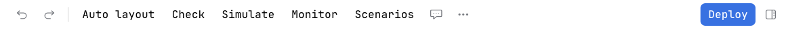
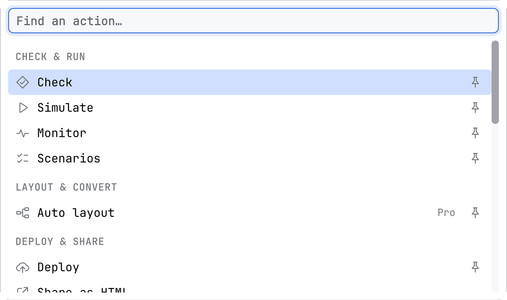
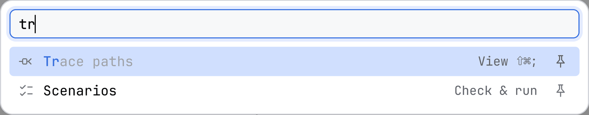
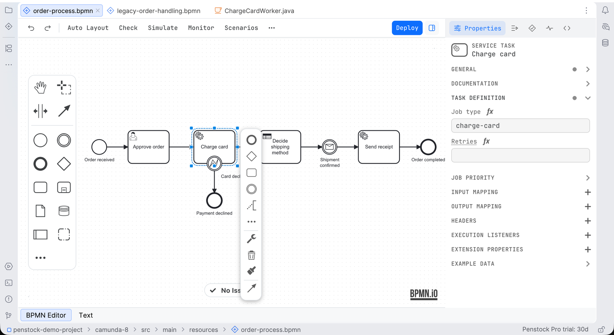
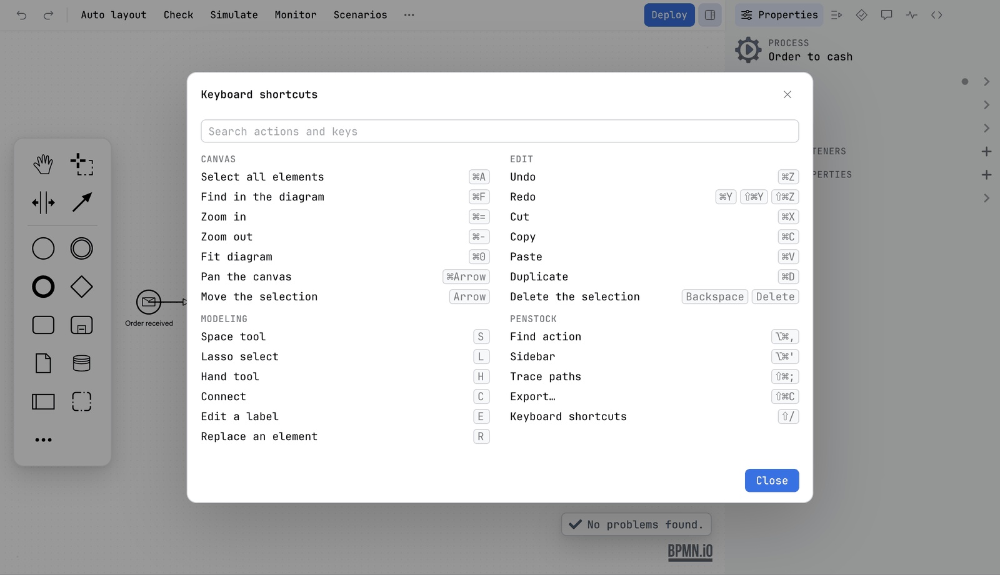

Guide / Editors
The toolbar and the More menu
The toolbar holds the actions you use most, the More menu holds all of them in sections, and you choose which ones sit on the bar.
How it works
One row across the top of the canvas, in the same order in all three editors. Undo and Redo are always on it, the editor's own view switcher and actions follow, and the sidebar toggle is the last thing on the right. Deploy is the one primary action, in the middle of the right-hand end. Everything else is in the More menu, the button with three dots.
Some actions are pinned to the bar to start with. You can change that.

The command palette
More opens a searchable list of every action, in sections, with the five you used last first under Recent. It is also the command palette, and the first-run tour names it. Type to filter: the letters you matched are marked in each row, and an action answers to keywords as well as to its name, so png finds Export, c8 finds what is Camunda 8 and bpmnlint finds Check. Each row has a pin, and the list says how many actions match. With the keyboard, the arrow keys move, Enter runs the action, Shift+Enter pins or unpins it and Esc closes the list.


The command palette in your tool
JetBrains
The palette's shortcut is Ctrl+Alt+,, or ⌘⌥, on a Mac. The same actions are in the IDE's own Find Action and Keymap under Tools | Penstock, so a shortcut can be bound to any of them the way the IDE binds its own. The palette is the action Find action in the keymap. The actions work while a Penstock editor has the focus, and there they take the keys before the IDE's own actions. Export keeps Cmd/Ctrl+Shift+C. See Shortcuts.
Command line
Not available on the command line. The command line has no editor and so no palette. The help of each command lists what it does, and the actions that need a licence say so when you run them.
VS Code
The palette's shortcut is Ctrl+Alt+,, or Cmd+Alt+, on a Mac, and the command is Penstock: Find action. The same actions are in VS Code's own Command Palette under Penstock, with the names they have in the editor, so a key can be bound to any of them in Keyboard Shortcuts. An action the diagram does not offer is not listed, and one it has switched off is greyed out. See Shortcuts.
Pin or unpin an action
- Open More (three dots).
- Find the action. Next to its name there is a small pin. It is a quiet grey on an action that is pinned already, and it shows on the other rows when the pointer or the keyboard is on them.
- Click the pin, or press Shift+Enter on the row. The action moves onto the bar. Do it again and it goes back into the menu only.
Penstock remembers your choice in ~/.penstock/preferences.json, the same file that keeps the width of the sidebar and whether you have seen the tour. It is the same in every tool on your machine and survives a restart. It is never stored in penstock.yaml, so your toolbar never lands in a teammate's checkout. If a later version adds a new action, you still get it, even if you rearranged the bar.
On the bar, an action only a well known icon can name is an icon with a tooltip: undo, redo and the sidebar toggle. Everything else is a word. A toggle stays pressed while what it shows is open, and its label never changes with the state.
Every action in the diagram editor
The menu groups its rows under headings, and the command palette uses the same sections in the same order: Check & run, Layout & convert, Deploy & share, View, File, Edit and Help.
| Action | What it does | Pinned at first | Shown for |
|---|---|---|---|
| Undo, Redo | Take back or repeat the last change. | Always on the bar | All |
| Auto layout Pro | Lays the whole diagram out again, then offers Undo. Auto layout | Yes | All |
| Check | Opens the check card, with Show all for the Problems tab. Diagram check | Yes | All |
| Simulate | Moves a token through the process. Token simulation | Yes | All |
| Monitor | What the engine is doing with this diagram: incidents, and the instances waiting at each step. Monitor | Yes | All |
| Scenarios Pro | The ways through this process, and running them. Scenarios | Yes | Camunda 7, Camunda 8, Operaton, CIB seven |
| Coverage Pro | Colours what your process tests reached. Process tests and coverage | Yes | Once test reports exist |
| Migrate to Camunda 8 | What does not carry over, and converting it. Camunda 7 to 8 | Yes | Camunda 7, Operaton, CIB seven |
| Deploy | Opens the Deploy popover, which sends the diagram. Deployment | Yes, on the right | Camunda 7, Camunda 8, Operaton, CIB seven |
| Sidebar | Shows or hides the sidebar. An icon at the right edge, pressed while it is open. The sidebar | Always on the bar | All |
| Fit diagram, Zoom in, Zoom out | The view. Each has a shortcut in the tools that have one. | No | All |
| Transaction boundaries | Draws a bar where the engine commits a transaction: before a user task, a receive task, an event-based gateway, an external task and a message, timer, signal or conditional catch event, and before or after an activity with an asynchronous continuation. The bars follow the diagram as you edit. | No | Camunda 7, Operaton, CIB seven |
| Minimap | Shows a small overview of a large diagram. | No | All |
| Trace paths | Shows every path that runs through the selected step and dims the rest. Off until a task, a gateway or an event is selected. Trace paths | No | All |
| Show comment badges | Draws the number of open comments on each element that has some. Comments | No | All |
| Sketchy drawing | Draws the diagram as if by hand, on your screen only. | No | All |
| Export… | Opens the export dialog, where you can also copy the diagram as a picture. Export | No | All |
| Templates… | Opens the connector template browser. Element templates | No | Camunda 8 |
| Import diagram… | Turns a draw.io, Visio, Signavio or Bizagi file into BPMN. Import a diagram | No | All |
| Share as HTML… | Writes one offline HTML file. Share as HTML | No | All |
| Copy, Paste | Use the system clipboard. You can paste into another diagram. | No | All |
| Keyboard shortcuts | Opens the sheet of every shortcut of the editor. See below. | No | All |
| Show the tour again | Replays the six-step tour of the editor. | No | All |
Check, Simulate, Monitor, Scenarios, Coverage, Migrate to Camunda 8, Transaction boundaries, Minimap, Trace paths, Sketchy drawing and Show comment badges stay pressed while they are on. Undo, Redo, Copy, Paste and Auto layout refuse to run while a token simulation is on, so a read-only preview cannot be written to the file. See Token simulation.

The decision and form editors
They have the same kind of bar: Undo and Redo, the actions of that editor, Deploy and the sidebar toggle, with the same More menu and command palette. Their actions are fewer.
| Editor | On the bar | In the More menu |
|---|---|---|
| Decision | A button for each view of the file (the requirements diagram, then one per decision), Check, Deploy, Sidebar | Trace paths, Export decision table as a workbook, Export decision table as CSV, Import decision table, Add rules from spreadsheet, Share as HTML, Keyboard shortcuts |
| Form | Preview, Check, Deploy, Sidebar | Share as HTML, Keyboard shortcuts |
Deploy is shown when the engine is known. Check on a form is free. The form's Check is off while the file cannot be read, and its tooltip says so. See The DMN editor, The form editor and The sidebar.
Keyboard shortcuts
The Keyboard shortcuts action, in the BPMN, DMN and form editors, opens a sheet with every shortcut of the editor you are in, in groups: Canvas, Edit, Modeling and Penstock. It has a search field, Search actions and keys. The sheet is built from what the editor really binds, so it cannot drift from the editor. Press ? to open it, or choose it from the More list. Where an action has a shortcut, its tooltip on the bar says so.

What you see
- Words for the actions you use, and icons only where an icon is well known: undo, redo and the sidebar toggle.
- One main button: Deploy.
- A pinned action that needs a feature you do not have shows what it would do and offers to buy Pro or sign in when you press it.
Common problems
- Deploy is not on the toolbar.
- It is shown when the engine is Camunda 7, Camunda 8, Operaton or CIB seven. A Classic BPMN project has none. Set
engineinpenstock.yaml. See Engines. - Coverage is not there.
- It appears only after your process tests have run and left reports under
targetorbuild. See Process tests and coverage. - Migrate to Camunda 8 is not there.
- It is for Camunda 7, Operaton and CIB seven diagrams only.
- I pinned something and it is gone in another tool.
- Your choice is kept in
~/.penstock/preferences.json. IfPENSTOCK_HOMEis set, the file is under that folder instead. Check both tools see the same one. - The menu has no Copy as image.
- It is not a menu entry any more. It is Copy in the export dialog, beside Save. See Export.